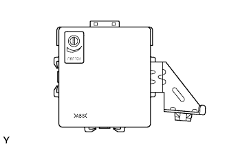

HỆ THỐNG CẢNH BÁO KHOẢNG CÁCH > KIỂM TRA HOẠT ĐỘNG |
| ĐO VÙNG PHÁT HIỆN |
Bật khoá điện ON.
Chuyển cần số đến vị trí R.
Bật công tắc cảnh báo phía sau ON.
Dịch chuyển cọc có đường kính 60 mm (2.34 in.) xung quanh cảm biến để đo những phạm vi có thể phát hiện của cảm biến.
Kiểm tra tình trạng tiếng kêu của chuông báo khi cảm biến siêu âm phát hiện được vật chướng ngại.
| Khoá điện | Công tắc cảnh báo phía sau | Vị trí cần chuyển số |
| ON | ON | R |
| KIỂM TRA CHỨC NĂNG KIỂM TRA BAN ĐẦU |
 |
Kiểm tra chức năng kiểm tra ban đầu của chuông.
Bật khóa điện đến vị trí ON và bật máy chẩn đoán ON. Không phụ thuộc vào vị trí cần số, chuông báo sẽ kêu sau xấp xỉ 0.4 giây. Chuông kêu liên tục trong thời gian xấp xỉ 1.0 +-0.3 giây. Nếu mẫu kiểm tra ban đầu của chuông không kêu, có thể có hư hỏng trong khoá điện, công tắc cảnh báo phía sau, chuông báo khoảng cách và/hoặc ECU cảnh báo khoảng cách.
Sau khi kiểm tra chức năng kiểm tra ban đầu, kiểm tra rằng không tìm thấy mẫu hỏng chuông báo, có thể có trục trặc với cảm biến và/hoặc dây điện của cảm biến. Mẫu hư hỏng sẽ tiếp tục kêu cho đến khi hư hỏng đã được sửa chữa xong.
| ĐIỀU CHỈNH ÂM LƯỢNG CHUÔNG BÁO |
|  |
Vặn núm trên ECU cảnh báo khoảng cách để điều chỉnh âm lượng.